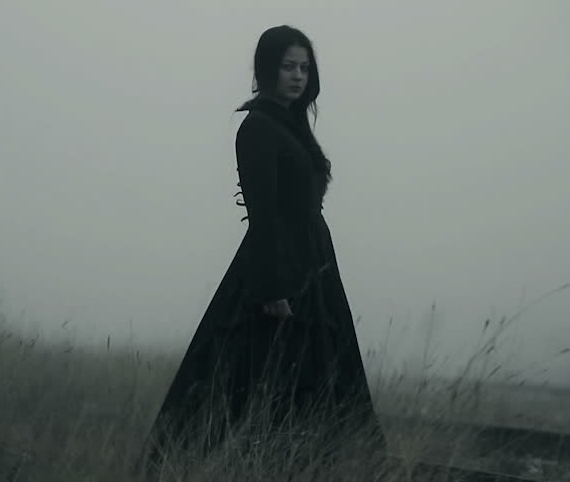
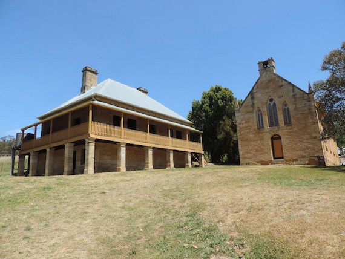

Located right on the west border of the Sydney metropolis area, of New South Wales, Australia, are the majestic Blue Mountains. Part of a larger expanse of rugged mountains of the Great Dividing Range, here there are wild peaks, cliffs, gorges and plateau escarpments that soar over the urban areas, forested gullies, and bushland below, and through this feral land of tangled brush and soaring mountains are several roads that meander through often perilous terrain. Yet for all of their scenic beauty, these mountains are infused with sinister lore and tales of the paranormal.
One of these revolves around the Victoria Pass, part of the Great Western Highway, which winds down from Mt. Victoria to Little Hartley and takes a harrowing route over dangerous terrain, dizzying sheer cliffs, and over precarious bridges built by convicts, but in addition to its physical dangers this is also a stretch of road that is home to a good amount of dark history and paranormal phenomena. The main ghostly attraction here is an apparition that purportedly prowls the road, appearing as a woman dressed in all black clothes and called “The Ghost in Black.”
This apparition supposedly has the unsettling habit of appearing in the middle of the road to startle drivers snaking their way along the route, often causing them to swerve, or according to some tales even go careening off the side to their deaths, and the Ghost in Black is blamed for more than a few accidents here along this lonely stretch. It is thought that the ghost is that of a young woman named Caroline, of the town of Little Hartley, who had a life intertwined with tragedy and murder. The daughter of liquor bootleggers Mary Hopkins and William James, she shared a hovel with 5 brothers and sisters. At the age of 8 her mother committed suicide, although it was suspected the drunk wife beater William might have had something to do with it, and he was eventually arrested on suspicion of murder and sentenced to death, only to be set free again when the conviction was overturned.
In the meantime, Caroline and her siblings had been left alone out in this wild, untamed land, and they lost their baby brother in the process of trying to survive without their parents. Caroline and her sister Mary would then go to work as servants at the Hartley Inn, owned by a wealthy local family by the name of Collits, where they met ex-convict John Walsh. At the age of 12, which was the age of consent at the time, Mary married Walsh and Caroline married a man named William, the son of the Collits’, a marriage which was soon to disintegrate as he was a violent drunk. Caroline moved in with Mary and Walsh, where she would begin a bizarre ménage-a-trois relationship with them, but she would later try to reconcile with her husband. The story goes that Caroline, Mary, and Walsh met William, but that the two men got into a drunken brawl, possibly out of jelousy, with Caroline breaking it up and telling William to flee. The next day her naked, battered, bloody body would be found at the second bridge of Victoria Pass, having been raped and her head bashed in with a rock. No one is quite sure what happened, but John Walsh would be arrested and sentenced to death for the crime in 1842, and ever since then Caroline’s vengeful ghost is said to lurk at the pass.